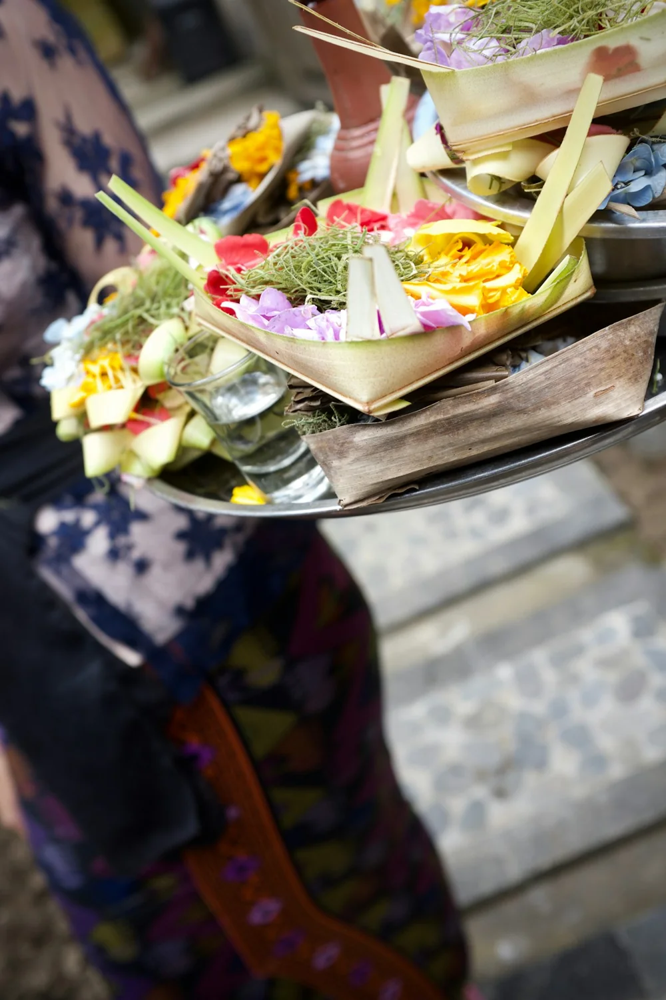

01 AKAR GERAKAN KAMI
Merawat alam.
Menjaga keseimbangan.
Bagi Bali, alam bukan sekadar tempat tinggal. Ia bagian dari kehidupan yang kita jaga bersama.
01
Parahyangan
Harmoni dengan Tuhan. Menghormati persembahan dengan memilah sisa upacara secara bijak.
02
Pawongan
Harmoni antarmanusia. Saling mengajak dan bergotong royong lewat kebersamaan banjar.
03
Palemahan
Harmoni dengan alam. Mengolah sampah organik menjadi kompos yang menyuburkan kembali tanah.

KEARIFAN LOKAL, LANGKAH MASA DEPAN
BALI / 001
Tri Hita Karana
Tiga harmoni. Satu Bali yang lestari.